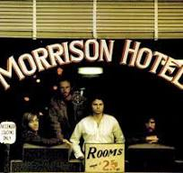

Tabla Productos
| DISCOS |
| Disco |
Precio |
Imagen |
| Morrison Hotel |
45.38$ |
 |
| Empyrean |
52.25$ |
|
| unplugged |
40.25$ |
|
| Dark Side of the Moon |
65.23$ |
|
| TruenoTierra |
55.39$ |
|
Descripción de cada disco
- Morrison Hotel: Es el quinto trabajo discográfico del afamado cuarteto californiano The Doors
- Empyrean: Es un disco de concepto que cuenta una sola historia tanto en las letras como en la música.
John Frusciante
- Unplugged de Nirvana: in New York es un álbum en vivo de la banda de rock estadounidense Nirvana,
lanzado el 1 de noviembre de 1994 por DGC Records.
- Dark Side of the Moon: es una mirada al «lado oscuro» de la condición humana (no sólo la locura, sino
también la violencia, la avaricia, la discriminación, la muerte...), a su vez reflejo de las presiones
que enfrentaba la banda Pink Floyd
- TruenoTierra: Truenotierra es el noveno álbum de estudio realizado por el grupo musical de Argentina La
Renga
Tabla Galeria de fotos
Descripcion de cada imagen
- LA GIOCONDA, LEONARDO DA VINCI
La Mona Lisa, o El retrato de Lisa Gherardini, aún siguen surgiendo teorías sobre la identidad y sobre
la enigmática sonrisa de la retratada por el gran artista renacentista a comienzos del siglo XVI.
- IMPRESIÓN, SOL NACIENTE, CLAUDE MONET
Quizá no sea el cuadro más famoso del movimiento impresionista pero sí marcó un punto de inflexión en el
mundo del arte puesto que a este cuadro se debe el nombre de Impresionismo los críticos utilizaron el
término tomado de la obra, como una burla.
- CUEVA DE ALTAMIRA
Una de las mejores representaciones del arte rupestre del paleolítico, con figuras de bisontes,
caballos, ciervos, manos y otros signos en las cuevas que le dan nombre, situadas en el pueblo cántabro
de Santillana del Mar.
- LAS MENINAS, DIEGO DE VELÁZQUEZ
Una de las obras más representativas del siglo de Oro de la pintura española y de las más admiradas
dentro del Museo del Prado, fechada sobre 1656, cuyo título es La familia de Felipe IV.
- LA CAPILLA SIXTINA, MIGUEL ÁNGEL
En 1508 el Papa Sixto IV encargó a Miguel Ángel que pintara la bóveda de esta capilla en el Vaticano.
Hoy, esos frescos con diferentes episodios del Génesis, constituyen una de las obras más conocidas de la
pintura.
- EL GUERNICA, PABLO PICASSO
Todo un alegato contra la guerra pintado por el artista en 1937 al conocer los bombardeos de la aviación
alemana sobre el pueblo vasco que le da nombre. Tras muchas periplos está expuesto en el museo Reina
Sofía de Madrid desde 1981. Sin duda uno de los cuadros más famosos de Pablo Picasso.